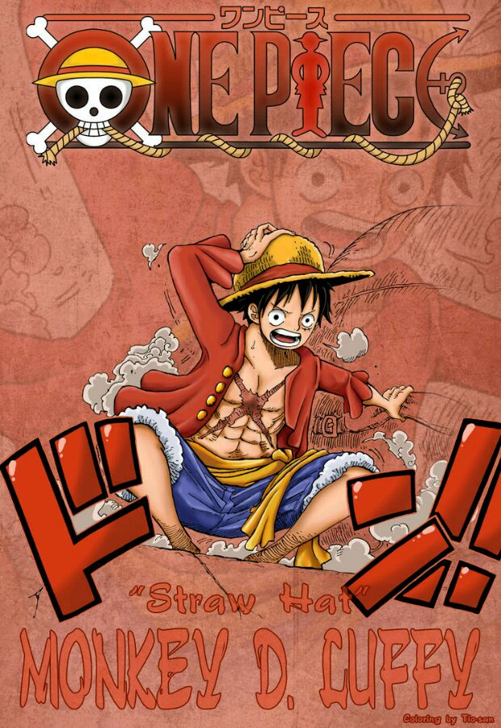
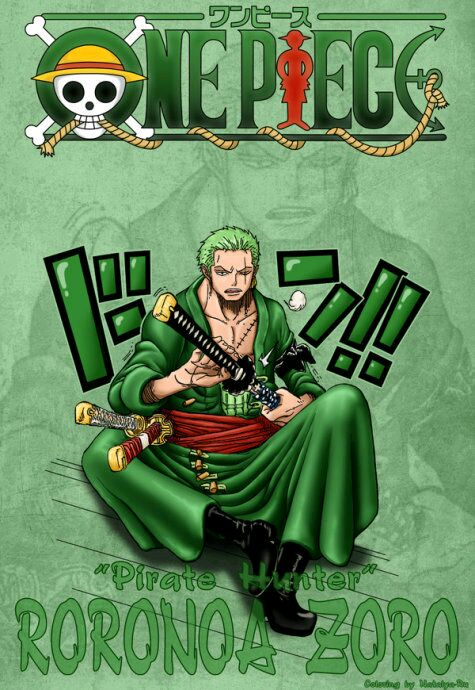
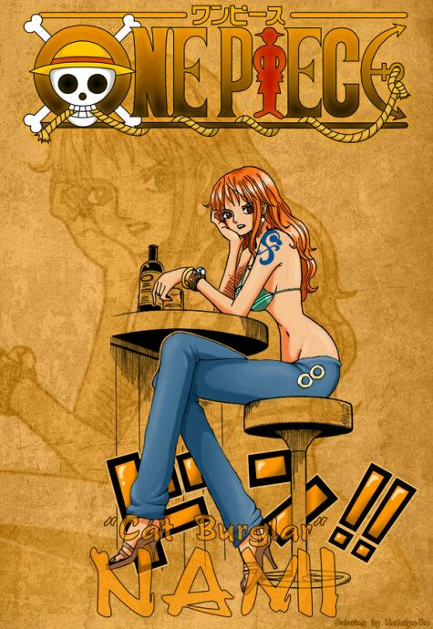
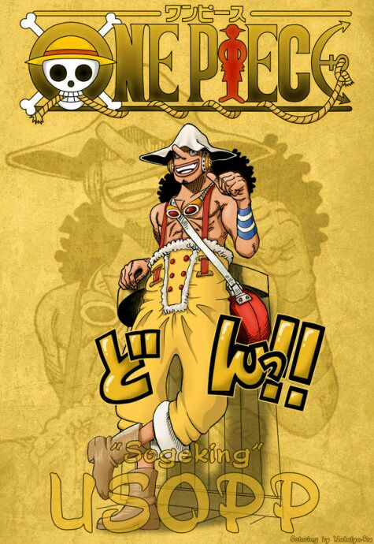
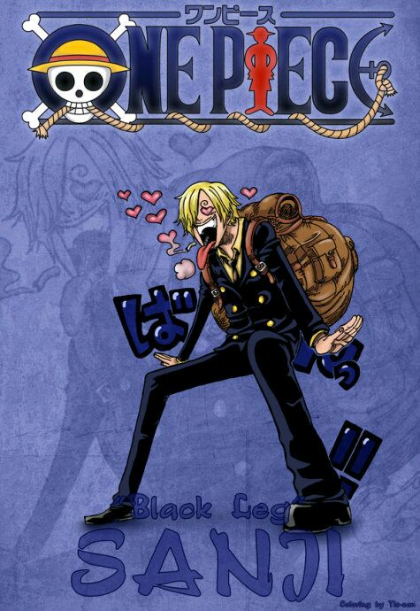
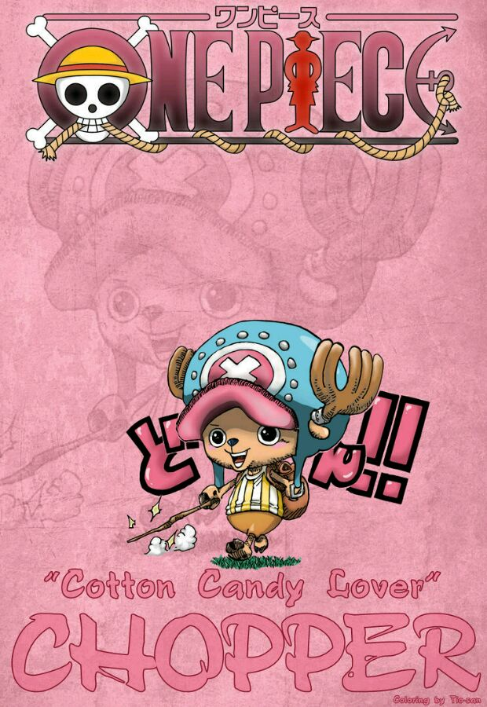
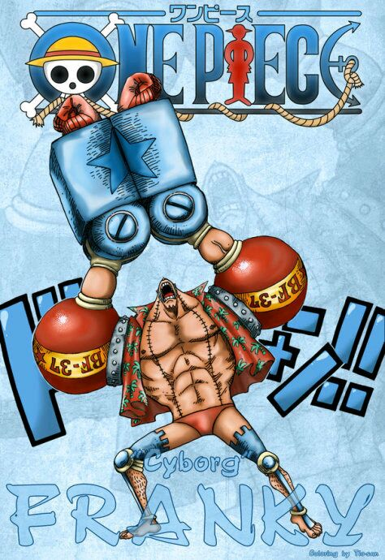
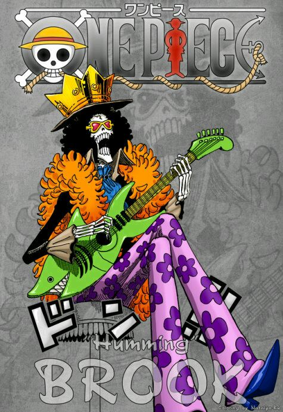

| “草帽”蒙其·D·路飛（モンキーD·ルフィ/Monkey D. Luffy）
初次登場：漫畫第1話
年齡：17歲→19歲
生日：5月5日
血型：F型
身高：172cm→174cm
故鄉：東海·風車村
身份：草帽海賊團船長
喜歡的食物：所有美食，首先是肉。
愛好：喜歡探險，感興趣於新奇怪異的事物
夢想：找到ONE PIECE，並成為海賊王。
惡魔果實：超人系橡膠果實
身世：父親是革命軍首領蒙奇·D·龍，爺爺是海軍中將英雄卡普。
懸賞：3千萬（可可亞西村事件）→1億（阿拉巴斯坦事件）→3億（司法島事件）→4億（頂上戰爭後）→5億（德雷斯羅薩篇）
由於他的標誌性特徵是一頂草帽，因此常被直接稱呼為“草帽”。夢想是找到傳說中的ONE PIECE，成為海賊王。性格積極樂觀，愛憎分明且十分重視夥伴，對任何危險的事物都超感興趣。看似白痴，卻是一個大智若愚型的無愧船長之職的人。和其他傳統的海賊所不同的是，他並不會為了追求財富而無故殺戮，而是享受著身為海賊的冒險。 |
 |
| “海賊獵人”羅羅諾亞·索隆（ロロノア·ゾロ/Roronoa Zoro）
初次登場：漫畫第3話
年齡：19歲→21歲
生日：11月11日
血型：XF型
故鄉：東海·霜月村
身份：東海海賊賞金獵人→草帽海賊團戰鬥員
身高：178cm→181cm
喜歡的食物：白米，海獸的肉，適合下酒的食物
愛好：睡覺、修煉、喝酒。
缺點：路痴
夢想：世界第一大劍豪
懸賞：6千萬（阿拉巴斯坦事件）→1億2000萬（司法島事件）→3億2000萬（德雷斯羅薩篇）
愛喝酒，愛睡覺，講義氣，海賊第一超級大路痴。為了小時候與摯友的約定而踏上了前往世界第一劍士的道路，隨後成為路飛的第一個夥伴。在初次敗給世界第一劍士“鷹眼米霍克”後向路飛發誓永不再敗，並且更加努力的鍛煉自己。兩年後的他成功與夥伴們匯合，並且為了實現自己的夢想，奔赴強者如雲的新世界。
|
 |
| “小賊貓”娜美（ナミ/Nami）
初次登場：漫畫第8話
年齡：18歲→20歲
生日：7月3日
血型：X型
身份：阿龍海賊團測量員→草帽海賊團航海士
故鄉：東海▪可可亞西村
特徵：左臂有風車和橘子樣的紋身（紀念阿健和養母貝爾梅爾），左手手腕戴著一個手鐲（姐姐諾琪高在娜美出海前送給她的）。
身高：169cm→170cm
三圍：B95▪W55▪H85
喜歡的食物：都不錯，但最喜歡橘子
愛好：錢，橘子
特長：繪製地圖，觀測天氣，偷東西
夢想：繪製出自己的世界地圖、繪製全世界的航海圖。
武器：三截式長棍→天候棒→完全版天候棒→魔法天候棒
懸賞：1600萬（司法島事件）→6600萬（德雷斯羅薩篇）
擁有橘色的短髮（兩年後為波浪長發）和左肩的刺青（風車與橘子的圖案）。使用棍術，現在武器為“魔法天候棒”。頭腦聰明又機靈，精通氣象學和航海術，擅長偷術，能用身體感知天氣，完美指示航路，是個能精確畫出航海圖的天才航海士。本質上是個細心、善良、重視感情、嫉惡如仇、偶爾有些溫柔的能幹的女性。最喜歡錢和橘子，夢想是要畫出全世界的地圖。
|
 |
| “GOD”▪烏索普（ウソップ/Usopp）
初次登場：漫畫第23話
年齡：17歲→19歲
生日：4月1日
血型：S型
身份：烏索普海賊團船長→草帽海賊團狙擊手
故鄉：東海▪西羅普村
身高：174cm→176cm
喜歡的食物：秋島的秋刀魚，旺季的魚類
愛好：發明各種東西、製造武器
夢想：成為勇敢的海上戰士。
武器：彈弓“銀河小彈珠”→巨型彈弓“兜”→彈弓“黑兜”/“成長黑兜”
懸賞：3千萬（以“狙擊王”的身份在司法島事件中）→2億（德雷斯羅薩篇）
特徵為頭戴狙擊防風鏡、淺啡色頭巾，長鼻子。先前武器為彈弓“銀河小彈珠”，後武器為提高了攻擊性和準確度的獨角仙彈弓，並用空島的各種貝進行了強化。兩年後武器為彈弓“黑兜”，並發射產自波音列島的植物種子POP GREEN。小時候是出名的吹牛大王，和村里的幾個孩子組成“烏索普海賊團”，自稱烏索普船長。發現克洛船長的陰謀後，立志要保護村里的人，和路飛並肩作戰。夢想是要成為勇敢的海上戰士。
|
 |
| “黑足”山治（サンジ/Sanji）
初次登場：漫畫第43話
年齡：19歲→21歲（兩年後）
生日：3月2日
血型：S型RH陰性
身份：海上餐廳巴拉蒂副料理長→草帽海賊團廚師
故鄉：北海
身高：177cm→180cm
喜歡的食物：辣味海鮮面，適合紅茶的食物
愛好：下廚，抽煙，浪漫幻想
身世：文斯莫克一族（殺手一族）第三子
夢想：尋找傳說中的奇蹟之海－ALL BLUE（曾在恐怖三桅船上透露自己夢想過成為透明人並且為別人帶來幫助，其實是為了偷窺女澡堂，但是吃了透明果實的阿布薩羅姆使他放棄了這個夢想。）
懸賞：7700萬（司法島事件）→1億7700萬（德雷斯羅薩篇）
金發，有著捲曲眉毛，永遠遮住半邊臉的傢伙，香煙不離口，最愛女人，很花心但很有風度，海賊中的紳士。小時候跟隨大海賊紅腳哲普學習廚藝。踢技以快準狠被海軍稱之為“黑足”。遵守“騎士道精神”，從不願意傷害任何的女性，哪怕是敵人。夢想是找到傳說之海All Blue而跟隨路飛一同進入了偉大航路。
|
 |
| “愛吃棉花糖的馴鹿”托尼托尼·喬巴（トニートニーチョッパー/Tony Tony Chopper）[1
初次登場：漫畫第134話
年齡：15歲→17歲
生日：12月24日
血型：X型
身份：磁鼓島醫生→草帽海賊團船醫
故鄉：偉大航路▪磁鼓島（冬島、櫻花之國）
身高：因身體變化而變化
喜歡的食物：棉花糖，巧克力，所有甜的食物
特長：醫術
夢想：成為萬能藥（不管什麼病都能治的醫生）
惡魔果實：動物系▪人人果實
懸賞：50（司法島事件）→100（德雷斯羅薩篇）
原為磁鼓島庫蕾哈醫生最寵愛的馴鹿兼醫療助手。喬巴的恩人是“庸醫”希魯魯克醫生，他身為野生馴鹿時本來沒有名字，“喬巴”也是由希魯魯克給他命名的，意思是他有一對連樹木都可以輕鬆砍倒的角。
喬巴的特徵是藍色的鼻子和一頂畫有“X”標記的粉紅色帽子。本身很怕熱，所以喜歡的島嶼是春天的冬島。是草帽海賊團年齡最小的成員。人獸型的姿態下，則是夥伴中身材最矮小的成員。其夢想是成為“萬能藥”。 （不管什麼病都能治的醫生）
|
 |
| “惡魔之子”妮可·羅賓（ニコ·ロビン/Nico Robin
初次登場：漫畫第114話
年齡：28歲→30歲
生日：2月6日
血型：S型
身份：奧哈拉島考古學家→……→巴洛克工作社副社長Miss.AllSunday→草帽海賊團考古學家
故鄉：西海▪奧哈拉島（已滅）
身高：188cm
三圍：B99▪W59▪H89
喜歡的食物：三明治，不太甜的蛋糕，適合咖啡的食物
特長：考古
夢想：尋找真正的“歷史正文”，並且在歷史正文碑的指引下，到達偉大航道的盡頭“拉夫德魯”。
惡魔果實：超人系▪花花果實
懸賞：7900萬（奧哈拉事件）→8000萬（司法島事件）→1億3000萬（德雷斯羅薩篇）
年僅8歲就被懸賞千萬的奧哈拉倖存者。在巴洛克解散後，加入草帽海賊團。個性冷靜，擅長考古學以及暗殺，學識淵博，對於世界政府、海盜、航海一事都知道的很詳細。目標是找到真正的歷史正文，絕不饒恕踐踏歷史文物的人。
|
 |
| “改造人”弗蘭奇（フランキー/Franky）
初次登場：漫畫第329話
本名：卡迪·佛蘭姆
年齡：34歲→36歲
生日：3月9日
血型：XF型
身份：湯姆工作室學徒→水之都“弗蘭奇之家”老大→草帽海賊團船工
故鄉：南海
身高：225cm→240cm
喜歡的食物：漢堡包，炸薯條，搭配可樂的食物
特長：不光是修船技術高超，還懂建築。除背後渾身上下都是武器（因為自己夠不到後背）。
夢想：製造出夢想之船，在Sunny號完成後，想看到自己製造的船到達世界盡頭而加入路飛一行。
懸賞：4400萬（司法島事件）→9400萬（德雷斯羅薩篇）
性格豪放，喜歡唱歌，跳奇怪的舞，下身喜歡只穿一條短褲。身為改造人的弗蘭奇，身體藏著各種兵器。弗蘭奇在被CP9抓入司法島的過程中被路飛他們救羅賓的精神所感動，義無返顧的站在路飛他們一邊。司法島事件結束後，弗蘭奇用寶樹亞當的材料建造了一艘夢想之船，取名“桑尼號（即萬里陽光號）”，並贈送給草帽海賊團。後來在路飛的邀請下進入了草帽海賊團。
弗蘭奇本來是想製造出夢想之船，但“桑尼號”完成後，只想看到自己製造的船能到達世界盡頭。
|
 |
| “鼻歌”&“靈魂之王”布魯克（ブルック/Brook）
初次登場：漫畫第442話
年齡：88歲→90歲【在人間時享年38歲】
生日：4月3日
血型：X型
身份：原某國護衛戰團團長→倫巴海賊團代理船長&劍士&音樂家→草帽海賊團音樂家
故鄉：西海
身高：266cm（帽高約20cm）
愛好：演奏，喝紅茶，牛奶，說骷髏冷笑話
特長：樂器、劍術
夢想：環繞世界一周到偉大航道雙子岬跟夥伴鯨魚“拉布”重逢。
惡魔果實：超人系▪黃泉果實
武器：喪魂之劍
懸賞：3300萬→8300萬（德雷斯羅薩篇）
原本是某國護衛隊團長，後加入倫巴海賊團，50年前跟鯨魚拉布約定在“雙子峽”重逢。後來在魔幻三角地帶遇到敵人並遭遇毒手，因黃泉果實的能力，靈魂走出黃泉並準備回身體時，在魔幻三角地帶迷路一年，找到的身體已變成骷髏，但爆炸頭仍然存在，自此他只能以骷髏狀態生存。幽靈島戰役結束後，從路飛口中得知夥伴拉布現在平安無事的消息，為了履行和拉布的約定，才正式加入草帽海賊團。
|
 |